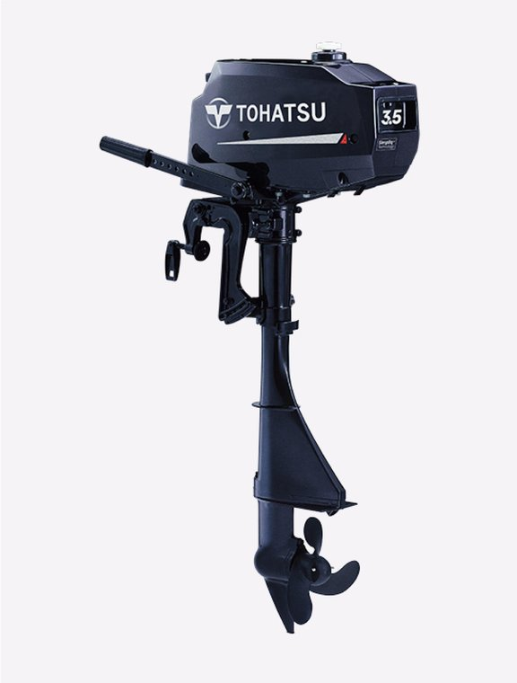

| 发动机形式 | 二冲程 单缸 |
|---|---|
| 最大输出 | 3.5 ps（2.6 kW） |
| 排量 | 74 cc |
| 缸径 × 行程 | 47 × 43 mm |
| 最高转速范围 | 4,200 – 5,300 rpm |
| 启动方式 | 手拉启动 |
| 操控方式 | 舵柄 |
| 换挡 | 前进 - 空挡 |
| 齿轮比 | 1.85 : 1（A2 型）/ 2.15 : 1（B2 型） |
| 螺旋桨范围 | 4.5″ – 7″ |
| 轴距 | 15″ / 20″ |
| 燃油 | 无铅汽油（87 号及以上） |
| 机油 | TOHATSU 正品 TCW-3 二冲程机油 |
| 润滑方式 | 预混燃油 |
| 油箱 | 内置 1.4L 油箱 |
| 整机重量 | 12.5 kg（最轻配置） |
| 标准配置 | CD 点火 / 安全拉绳 / 手提把 |
* 以上规格参数参考 TOHATSU 官方资料整理,实际销售型号配置、轴距、颜色等可能存在差异,具体请以实物及销售确认为准。规格如有变更,恕不另行通知。